Holling-Tanner model - Demo for Takens-Bogdanov point normal form
Contents
- Differential equations for predator-prey model
- Right-hand side
- Sequence of parameters
- Continuation of steady state branch
- Plot bifurcation diagram
- Computation of first Hopf point(s)
- Include first Hopf point into single-parameter bifurcation diagram
- Continuation of Hopf bifurcation in two parameters
- Detect special points along Hopf curve
- Singularity of defining system for Hopf bifurcation
- Plot Hopf bifurcation in two-parameter plane, including Takens-Bogdanov point
- Test functions for codimension-2 bifurcations along Hopf curve
- Fold bifurcation
- Include first fold point into single-parameter bifurcation diagram
- Continue fold branch
- Detect special points along fold curve
- Insert fold in figure 3
- Test functions for codimension-2 bifurcations along fold curve
- Branch off to periodic orbit at soem Hopf point, continue to large period
- Convert point close to end of the psol_branch to homoclinic orbit
- Continue branch of homoclinic orbits in two parameters
- Add homoclinic orbit to two-parameter bifurcation diagram
Differential equations for predator-prey model
From: Liu, X., Liu, Y., and Wang, J. (2013). Bogdanov-Takens bifurcation of a delayed ratio-dependent Holling-Tanner predator prey system. In Abstract and Applied Analysis, volume 2013
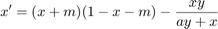
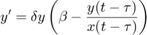
$Id$
clear; % clear variables close all; % close figures addpath('../../ddebiftool',... '../../ddebiftool_extra_psol',... '../../ddebiftool_extra_nmfm',... '../../ddebiftool_utilities');
Right-hand side
funcs=set_funcs(... 'sys_rhs', @HollingTanner_rhs,... 'sys_tau', @()2,... 'sys_deri', @HollingTanner_deri,... 'sys_mfderi',@HollingTanner_mfderi);
Sequence of parameters
indbeta=1;
indtau=2;
inda=3;
indm=4;
indh=5;
inddelta=6;
getpar=@(x,i)arrayfun(@(p)p.parameter(i),x.point);
getx=@(x,i)arrayfun(@(p)p.x(i),x.point);
getamp=@(x,i)[arrayfun(@(p)max(p.profile(i,:)),x.point);...
arrayfun(@(p)min(p.profile(i,:)),x.point)];
Continuation of steady state branch
fprintf('----- Steady-state branch -----\n'); beta=0.5; a=0.5; m=(1/30)*(1-beta/(a*beta+1)); h=(1/4)*(beta/(a*beta+1)-1)^2+m*beta/(a*beta+1); tau=1/4*(a*beta+1)^2/beta; beta=0.4; delta=0.5409; stst.parameter=[beta,tau,a,m,h,delta]; parameter_bd={'max_bound',[indbeta,0.6; inddelta,0.7],... 'min_bound',[indbeta,0.4;inddelta,0.4],... 'max_step',[0,0.1;indbeta,5e-3;inddelta,5e-3]}; xster=-(1/2)*((beta/(a*beta+1)+2*m-1)+sqrt((1-2*m-beta/(a*beta+1))^2+4*(m*(1-m)-h))); yster=beta*xster; contpar=indbeta; stst_branch = SetupStst(funcs,'x',[xster; yster],'parameter',stst.parameter,... 'contpar',contpar,'max_step',[0,0.005],'min_bound',... [contpar 0.4],'max_bound',[contpar 0.6],... 'newheuristics_tests',0); figure(1);clf ax1=gca; title(ax1,sprintf('steady states for delta=%g',stst.parameter(inddelta))); [stst_branch] = br_contn(funcs,stst_branch,100); [nunst_stst,dum,dum,stst_branch.point]=GetStability(stst_branch,'funcs',funcs); %#ok<ASGLU>
----- Steady-state branch ----- BR_CONTN warning: boundary hit.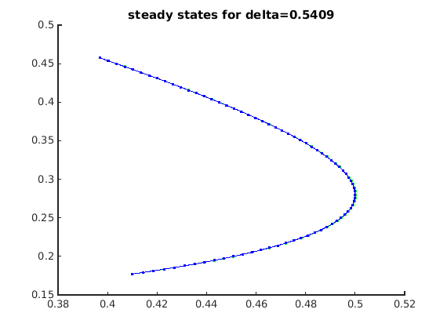
Plot bifurcation diagram
beta_stst=getpar(stst_branch,indbeta); x1_stst=getx(stst_branch,1); cla(ax1); plot(ax1,beta_stst(nunst_stst==0),x1_stst(nunst_stst==0),'g.',... beta_stst(nunst_stst==1),x1_stst(nunst_stst==1),'r.',... beta_stst(nunst_stst==2),x1_stst(nunst_stst==2),'b.','linewidth',2); stst_lgtext={'unstable=0','unstable=1','unstable=2'}; legend(ax1,stst_lgtext,'location','west'); xlabel(ax1,'\beta'); ylabel(ax1,'x_1'); title(ax1,sprintf('steady states for delta=%g',stst.parameter(inddelta)));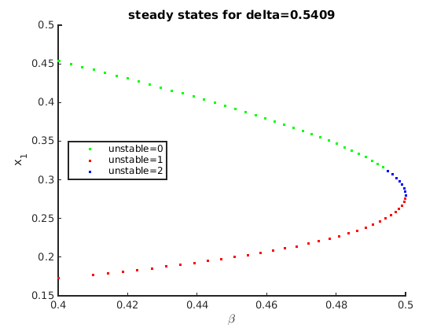
Computation of first Hopf point(s)
and initialization of pbranch
fprintf('----- Hopf branch -----\n'); indhopf=find(abs(diff(nunst_stst))==2,1,'first'); hopf_branch = SetupHopf(funcs, stst_branch, indhopf, 'contpar', [inddelta,indbeta],... 'dir', indbeta, 'step', 0.002,parameter_bd{:});
----- Hopf branch -----
Include first Hopf point into single-parameter bifurcation diagram
hold(ax1,'on'); plot(ax1,hopf_branch.point(1).parameter(indbeta),hopf_branch.point(1).x(1),... 'bo','markerfacecolor','b'); stst_lgtext_h=[stst_lgtext,{'Hopf'}]; legend(ax1,stst_lgtext_h,'location','west');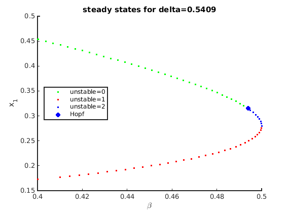
Continuation of Hopf bifurcation in two parameters
figure(2);clf ax2=gca; title(ax2,'Hopf in beta-delta plane'); hopf_branch=br_contn(funcs,hopf_branch,300); [nunst_hopf,dom,triv,hopf_branch.point]=GetStability(hopf_branch,'funcs',funcs,... 'exclude_trivial',true); %#ok<ASGLU>
BR_CONTN warning: boundary hit.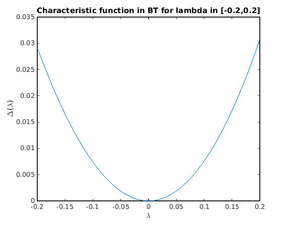
Detect special points along Hopf curve
fprintf('----- Codimension-two detection along Hopf branch -----\n');
[hbif,hopf_ind2,hopf_branch_refined,hopftestfuncs]=HopfCodimension2(funcs,hopf_branch);
----- Codimension-two detection along Hopf branch -----
HopfCodimension2: (provisional) 1 Takens-Bogdanov detected.
br_insert: detected 1 of 1: BT. Normalform:
a2: -0.38162
b2: -1.6895
Singularity of defining system for Hopf bifurcation
Let us demonstrate that the defining system for the Hopf bifurcation is singular in the Takens-Bogdanov bifurcation. The 8x9 matrix J0 below is its Jacobian (without the pseudo-arclength condition). Its singular-value decomposition shows one zero (up to round-off). hbt is the point along the Hopf branch closest to the BT point.
The characteristic matrix has a double root at lambda=0 in BT.
hbt=hopf_branch_refined.point(hopf_ind2(1)); J0=hopf_jac(funcs,hbt.x,hbt.omega,hbt.v,hbt.parameter,[inddelta,indbeta],hbt.v.'); disp('J0='); disp(J0); fprintf('Size of J0: (%d x %d), min(svd(J0))=%g\n',... size(J0,1),size(J0,2),min(svd(J0))); charfunBT=@(lambda)det(ch_matrix(funcs,hbt.x(:,[1,1]),hbt.parameter,lambda)); figure(5);clf; fplot(charfunBT,[-0.2,0.2]); title('Characteristic function in BT for lambda in [-0.2,0.2]'); xlabel('\lambda'); ylabel('\Delta(\lambda)');
J0=
Columns 1 through 6
0.32 -0.64 0 0 0 0
0.16 -0.32 0 0 0 0
1.7889 -1.1102e-16 -0.32 0.64 0 0
0 0 -0.16 0.32 0 0
0 0 0 0 -0.32 0.64
0 0 0 0 -0.16 0.32
0 0 0.89443 0.44721 0 0
0 0 0 0 0.89443 0.44721
Columns 7 through 9
0 0 0
0 -7.7716e-18 0.0896
0 0 0
0 2.4825e-17 -0.28622
0.89443 0 0
0.44721 0 0
0 0 0
0 0 0
Size of J0: (8 x 9), min(svd(J0))=1.82431e-16
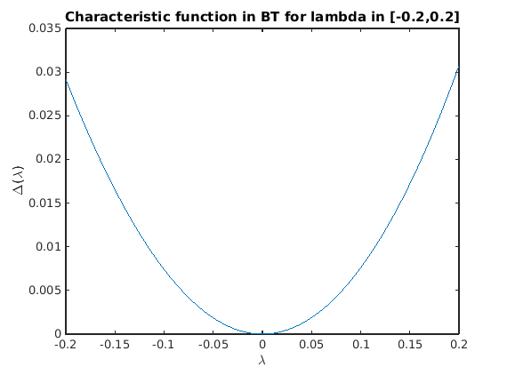 Plot Hopf bifurcation in two-parameter plane, including Takens-Bogdanov point
and in 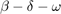 space.
beta_hopf=getpar(hopf_branch_refined,indbeta);
delta_hopf=getpar(hopf_branch_refined,inddelta);
omega_hopf=[hopf_branch_refined.point.omega];
beta_bt=hbif{1}.parameter(indbeta);
delta_bt=hbif{1}.parameter(inddelta);
omega_bt=hopf_branch_refined.point(hopf_ind2).omega;
figure(3);clf;
subplot(1,2,1);
ax3l=gca;
phl=plot3(ax3l,beta_hopf,delta_hopf,omega_hopf,'b-',...
beta_bt,delta_bt,omega_bt,'bo','linewidth',2);
grid on
b2_lgtext_h={'Hopf','BT from Hopf'};
legend(ax3l,b2_lgtext_h,'location','northoutside');
xlabel(ax3l,'\beta');
ylabel(ax3l,'\delta');
zlabel(ax3l,'\omega');
subplot(1,2,2);
ax3r=gca;
ph=plot(ax3r,beta_hopf,delta_hopf,'b-',...
beta_bt,delta_bt,'bo','linewidth',2);
grid on
xlabel(ax3r,'\beta');
ylabel(ax3r,'\delta');
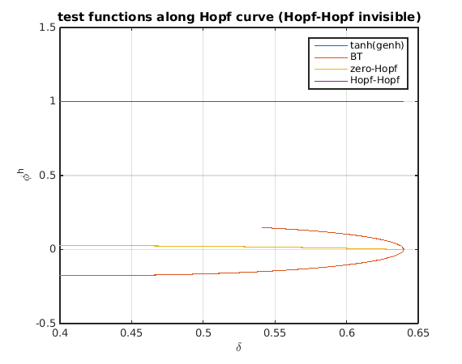 Test functions for codimension-2 bifurcations along Hopf curve
The test functions for 4 codimension-2 bifurcations are in output hopftestfuncs of the utility function HopfCodimension2:
- L1 for generalized hopf (genh),
- sign(omega) for Takens-Bogdanov (bt)
- 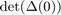 for zero-Hopf interaction (zeho, touches zero for BT)
- 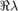 for complex eigenvalue closest to imaginary axis for Hopf-Hopf interaction (hoho).
figure(5);clf plot(delta_hopf,[tanh(hopftestfuncs.genh(1,:));... hopftestfuncs.bt;... hopftestfuncs.zeho;... hopftestfuncs.hoho]); grid on legend({'tanh(genh)','BT','zero-Hopf','Hopf-Hopf'}); set(gca,'ylim',[-0.5,1.5]); xlabel('\delta'); ylabel('\phi^h'); title('test functions along Hopf curve (Hopf-Hopf invisible)')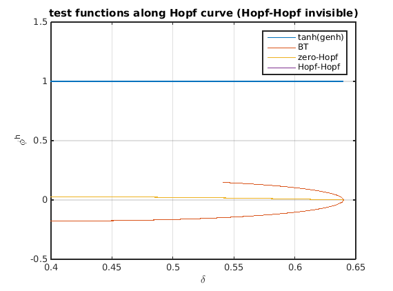
Fold bifurcation
We do a standard continuation, using the starting index obtained from the flagged point indices.
fprintf('----- fold branch -----\n'); foldind = find(diff(nunst_stst)==1,1,'first'); [fold_branch, suc] = SetupFold(funcs, stst_branch, foldind, ... 'contpar', [inddelta,indbeta], 'dir', inddelta, 'step', 0.005, parameter_bd{:}); disp(suc);
----- fold branch -----
1
Include first fold point into single-parameter bifurcation diagram
plot(ax1,fold_branch.point(1).parameter(indbeta),fold_branch.point(1).x(1),... 'ks','markerfacecolor','k'); stst_lgtext_f=[stst_lgtext_h,{'fold'}]; legend(ax1,stst_lgtext_f,'location','west');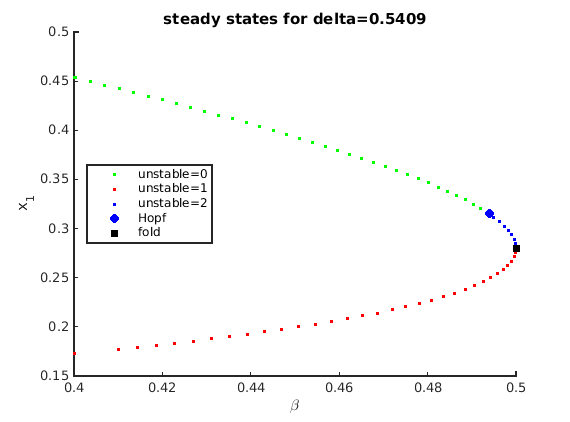
Continue fold branch
figure(2); title(ax2,'Fold in beta-delta plane'); fold_branch=br_contn(funcs,fold_branch,300); fold_branch = br_rvers(fold_branch); fold_branch=br_contn(funcs,fold_branch,300); [nunst_fold,dom,triv,fold_branch.point]=GetStability(fold_branch,'funcs',funcs,'exclude_trivial',true);
BR_CONTN warning: boundary hit. BR_CONTN warning: boundary hit.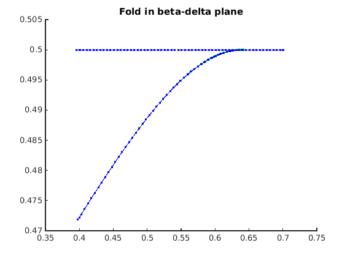
Detect special points along fold curve
fprintf('----- Codimension-two detection along fold branch -----\n');
[fbif,fold_ind2,fold_branch_refined,foldtestfuncs]=FoldCodimension2(funcs,fold_branch);
----- Codimension-two detection along fold branch -----
FoldCodimension2: (provisional) 1 Takens-Bogdanov detected.
br_insert: detected 1 of 1: BT. Normalform:
a2: 0.38162
b2: 1.6895
Insert fold in figure 3
beta_fold=getpar(fold_branch_refined,indbeta);
delta_fold=getpar(fold_branch_refined,inddelta);
omega_fold=0*beta_fold;
beta_bt2=fbif{1}.parameter(indbeta);
delta_bt2=fbif{1}.parameter(inddelta);
hold(ax3l,'on');
pf=plot3(ax3l,beta_fold,delta_fold,omega_fold,'k-',...
beta_bt2,delta_bt2,0,'ks','linewidth',2);
b2_lgtext_f={'fold','BT from fold'};
legend(ax3l,[b2_lgtext_h,b2_lgtext_f],'location','northoutside');
hold(ax3r,'on');
plot(ax3r,beta_fold,delta_fold,'k-',...
beta_bt2,delta_bt2,'ks','linewidth',2);
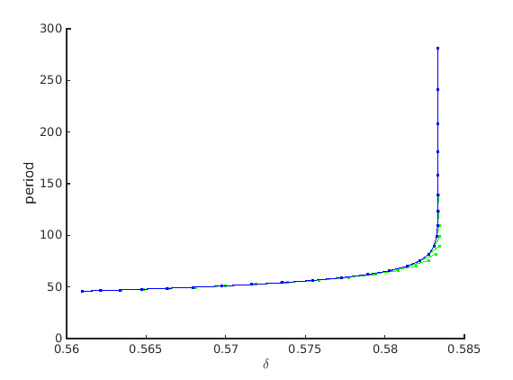 Test functions for codimension-2 bifurcations along fold curve
The test functions for 4 codimension-2 bifurcations are in output foldtestfuncs of the utility function FoldCodimension2:
- a for cusp (genh),
- 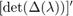 in 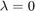 for Takens-Bogdanov (bt)
- for complex eigenvalue closest to imaginary axis for zero-Hopf interaction (zeho).
figure(5);clf plot(delta_fold,[real(foldtestfuncs.cusp(1,:))/100;foldtestfuncs.bt;foldtestfuncs.zeho],'.'); grid on legend({'cusp/100','BT','zero-Hopf'},'location','northwest'); set(gca,'ylim',[-1,1]); xlabel('\delta'); ylabel('\phi^f'); title('test functions along fold curve (zero-Hopf invisible)')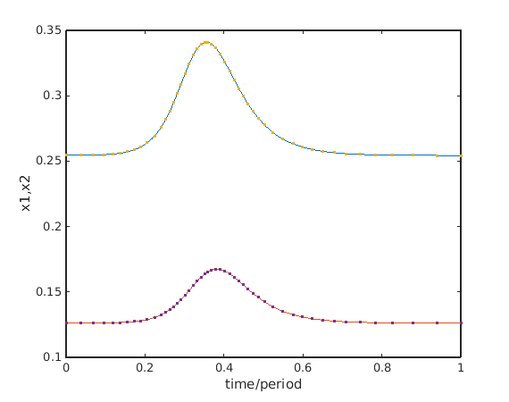
Branch off to periodic orbit at soem Hopf point, continue to large period
We know that the orbit must be unstable close to the Hopf bifurcation from the Takens-Bogdanov normal form and the Lyapunov coefficients of the Hopf bifurcation.
psol_branch=SetupPsol(funcs,hopf_branch_refined,2,... 'contpar',inddelta,'degree',3,'intervals',50,parameter_bd{1:4},'max_step',[0,inf]); [xm,ym]=df_measr(0,psol_branch); ym.field='period'; ym.col=1; ym.row=1; psol_branch.method.continuation.plot_measure.x=xm; psol_branch.method.continuation.plot_measure.y=ym; figure(4);clf; ax4=gca; psol_branch=br_contn(funcs,psol_branch,25); xlabel(ax4,'$\delta$','interpreter','latex'); ylabel(ax4,'period');
Convert point close to end of the psol_branch to homoclinic orbit
and correct homoclinic orbit.Then refine and repeat correction.
hcli=p_tohcli(funcs,psol_branch.point(end-5)); figure(5);clf; p_pplot(hcli); xlabel('time/period');ylabel('x1,x2'); mhcli=df_mthod(funcs,'hcli'); mhcli.point.print_residual_info=1; [hcli,suc]=p_correc(funcs,hcli,inddelta,[],mhcli.point); % correct disp(suc); hcli2=p_remesh(hcli,3,50); % remesh it and [hcli3,suc]=p_correc(funcs,hcli2,indbeta,[],mhcli.point); % correct it again disp(suc);
it=1, res=0.000218232
it=2, res=0.00436162
it=3, res=0.000644127
it=4, res=1.38396e-06
it=5, res=4.35429e-13
1
it=1, res=5.46536e-05
it=2, res=4.63673e-09
1
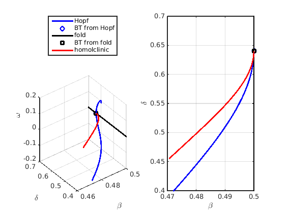 Continue branch of homoclinic orbits in two parameters
Branches have to be created manually as described in hom_demo.
hcli_br=df_brnch(funcs,[inddelta, indbeta],'hcli');
hcli_br.point=hcli3;
hcli4=hcli3;
hcli4.parameter(indbeta)=hcli4.parameter(indbeta)-1e-4;
[hcli5,suc]=p_correc(funcs,hcli4,inddelta,[],mhcli.point);
hcli_br.point(2)=hcli5;
hcli_br.parameter.max_bound=fold_branch.parameter.max_bound;
hcli_br.parameter.min_bound=fold_branch.parameter.min_bound;
hcli_br.parameter.max_step=[indbeta,5e-3;inddelta,5e-3];
hcli_br.method.point.print_residual_info=1;
figure(2);
hcli_br=br_contn(funcs,hcli_br,28);
hcli_br=br_rvers(hcli_br);
hcli_br=br_contn(funcs,hcli_br,40);
it=1, res=0.0014028 it=2, res=0.00011913 it=3, res=3.65102e-06 it=4, res=2.48553e-10 it=1, res=0.000365965 it=2, res=8.65102e-07 it=3, res=1.8587e-10 it=1, res=0.000544192 it=2, res=1.2902e-06 it=3, res=4.04638e-10 it=1, res=7.43174e-05 it=2, res=9.05998e-09 it=1, res=0.000899291 it=2, res=1.94942e-06 it=3, res=9.03138e-10 it=1, res=0.00123024 it=2, res=2.93872e-06 it=3, res=1.98206e-09 it=1, res=0.00187659 it=2, res=4.50497e-06 ...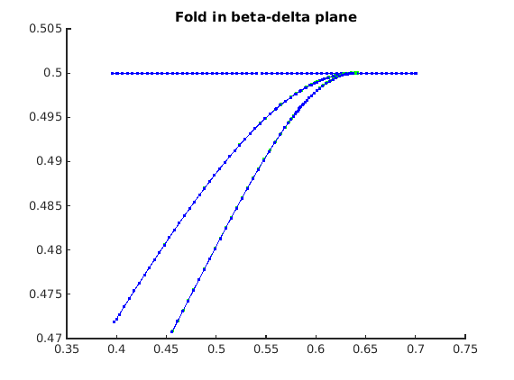
Add homoclinic orbit to two-parameter bifurcation diagram
beta_hcl=getpar(hcli_br,indbeta); delta_hcl=getpar(hcli_br,inddelta); phoml=plot3(ax3l,beta_hcl,delta_hcl,0*delta_hcl,'r-','linewidth',2); phomr=plot(ax3r,beta_hcl,delta_hcl,'r-','linewidth',2); legend(ax3l,[b2_lgtext_h,b2_lgtext_f,{'homolclinic'}],'location','northoutside');